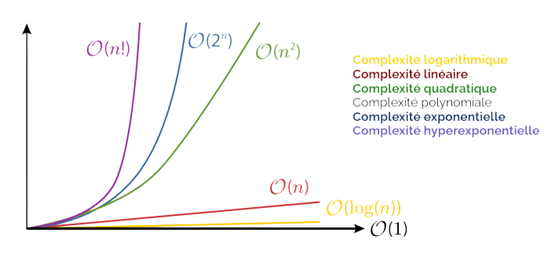
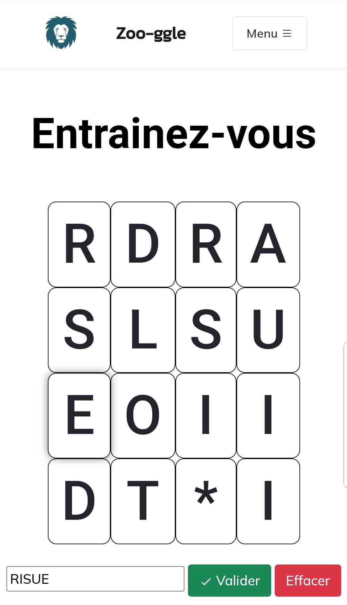
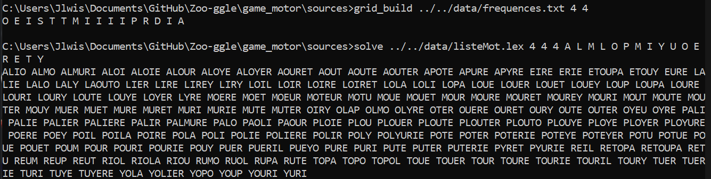
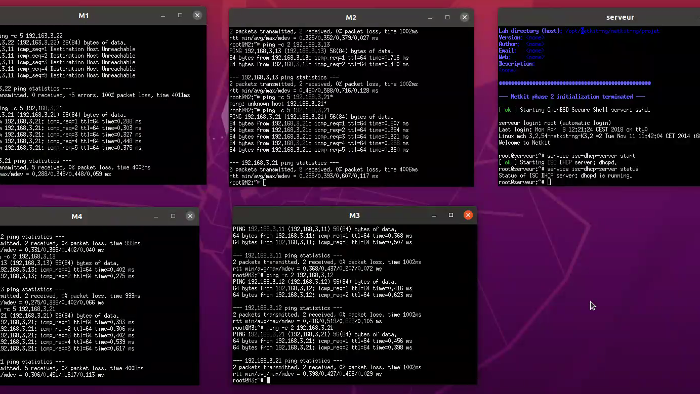
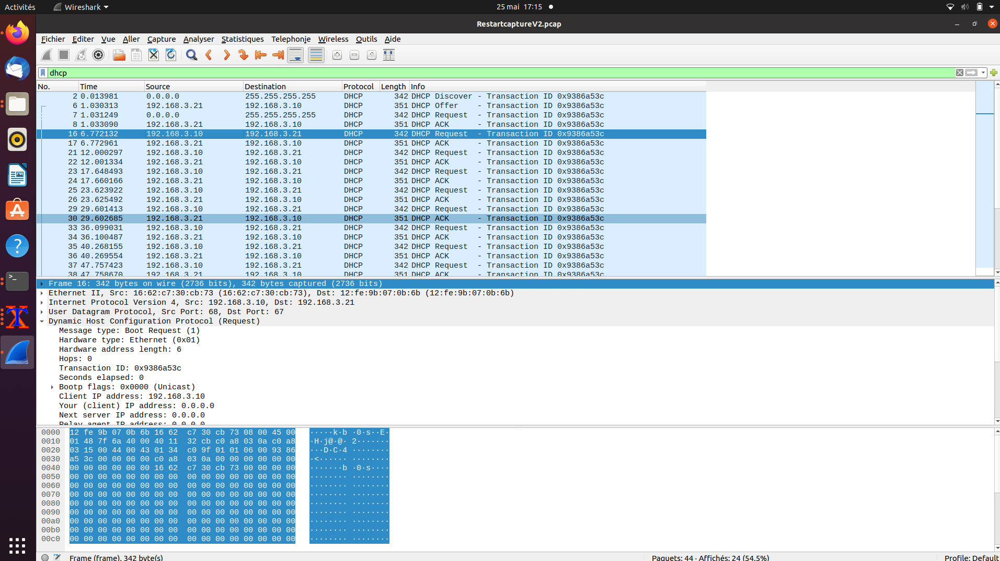
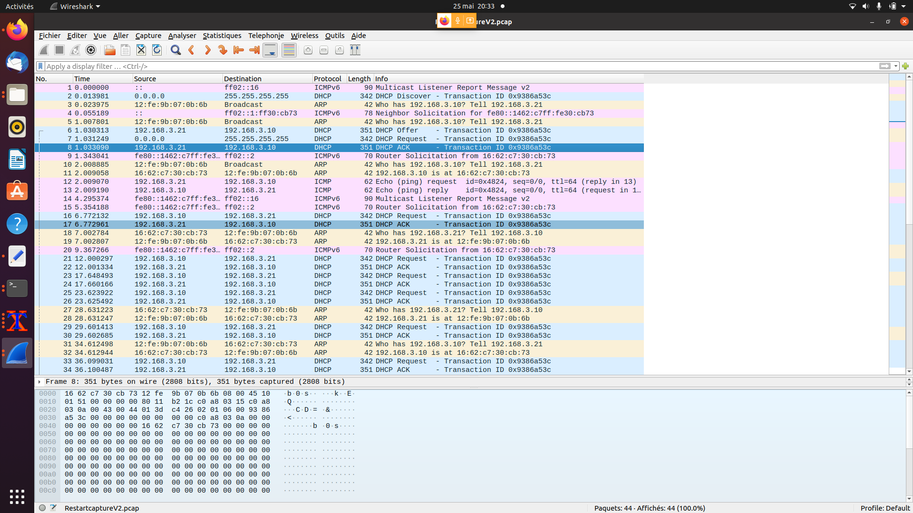
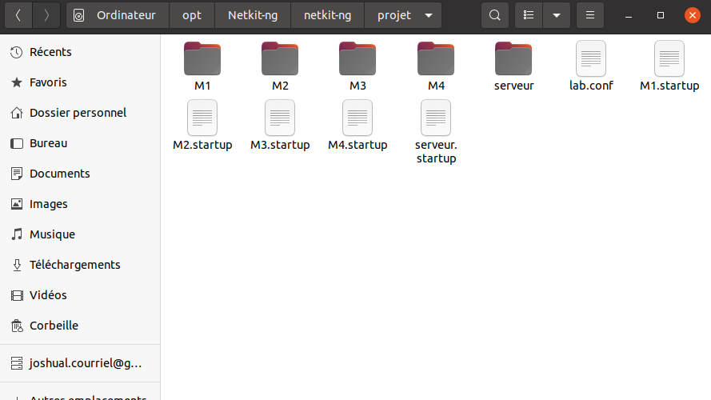

Vous trouverez ici mon expérience acquise durant mes études en BUT Informatique en Alternance.
Introduction
Le portfolio, tel que défini en BUT, est un portefeuille de compétences ou un passeport
professionnel. Il représente un point de connexion crucial entre le monde universitaire et le monde
socio-économique. Comme le disait le célèbre proverbe chinois, se connaître soi-même est une forme
d'intelligence. C'est dans cette optique que le portfolio est utilisé pour aider les personnes
inscrites en BUT à se situer elles-mêmes, à connaître leurs propres compétences et leurs
réalisations professionnelles.
Le portfolio est un outil essentiel pour la professionnalisation de la personne inscrite en BUT. Il
permet de valoriser les compétences développées pendant la formation et de mettre en avant les
réalisations professionnelles acquises. En individualisant le parcours, le portfolio permet à chacun
de mieux comprendre ses propres forces et faiblesses, ainsi que les opportunités de développement.
C'est pourquoi le portfolio est devenu un élément clé de la réussite professionnelle.
On décompte 6 blocs de compétences dans le portfolio du BUT :
Partir des exigences et aller jusqu'à une application complète
Savoir-Faire :
Segmenter le codeCommenter son codeRéaliser une applicationAnalyser un cahier des chargesCoder dans un langage de programmation
Savoir-Être :
Attentif aux besoins des clientsOrganiséMéthodiqueCréatif
Savoirs :
Notions d'AlgorithmieNotions de Gestion de projet
Grâce à mes compétences acquises dans le bloc de compétences "Réaliser", je suis capable
d'élaborer et d'implémenter des spécifications fonctionnelles et non fonctionnelles à partir des
exigences. J'ai suivi des cours de développement mobile sous Android en Java avec des travaux
pratiques qui m'ont permis de mettre en pratique ces compétences. De plus, j'ai également suivi
des cours de JAVA avancés qui m'ont donné les connaissances nécessaires pour appliquer des
principes d'accessibilité et d'ergonomie dans la conception et la programmation d'applications.
Les cours de méthodologie de tests que j'ai suivis m'ont également aidé à vérifier et valider la
qualité de mes applications grâce à l'adoption de bonnes pratiques de conception et de
programmation. Enfin, les cours de développement Web que j'ai suivis m'ont donné une vision
globale de la conception d'applications Web, qui m'a permis de développer des compétences
polyvalentes dans la réalisation de projets.
Avec ces compétences, je suis en mesure de concevoir des applications robustes et ergonomiques,
en mettant l'accent sur l'accessibilité pour les utilisateurs. Je suis également en mesure de
tester mes applications de manière rigoureuse pour assurer la qualité de mes produits finaux. En
somme, mes compétences en matière de réalisation d'applications me permettent de développer des
solutions innovantes, efficaces et de qualité pour répondre aux besoins de mes clients.
Projets associés
Avec Tristan MARTINEZ
L'un des tout premiers projets de l'année fût Azul : vous incarnez un artisan
au 16ème siècle
chargé de décorer le Palais Royal de Evora, demeure somptueuse du Roi du
Portugal. Pour
cela, vous devrez faire parler votre fibre artiste et vos talents d'artisan
afin de
constituer la plus belle des mosaïques. La tâche s'annonce délicate et la
concurrence sera
rude. D'autres concurrents sont dans la course et ont bien d'intention de
vous empêcher de
remplir votre mission. Seule la plus belle fresque ornera les murs du
palais. Devenez
l'artisan le plus prestigieux de la royauté !
Ce projet a été réalisé en Python et nous y avons inclus une "IA" qui peut jouer
de différents
niveaux.
Avec Laura LEROY
Le but de ce projet est de réaliser une version simplifiée du jeu Loop Hero. Il
s’agit d’un jeu pour un seul joueur où l’on est coincé dans une boucle que l’on
aménage soi-même. C’est un jeu de type rogue-like avec un peu de deck building.
Ce projet est découpé en 3 phases.
Lors de la première phase voici à quoi ressemblait notre jeu :
Une version simplifiée du jeu Loop Hero :
Un personnage avance sur une boucle prédéfinie.
Le joueur peut passer du mode “aventure” au mode planification en appuyant sur
les touches S pour le mode planification (arrête le temps et le personnage).
Avec le mode planification, le joueur peut poser des tuiles grâce aux cartes
qu’il possède en main. On doit appuyer sur la touche D pour repasser en mode
aventure. Le héros dispose des effets des tuiles placées (spawn de monstres,
effets direct sur les statistiques..).
Le héro enclenche un combat (ง'̀-'́)ง contre un ennemi lorsqu'il se trouve sur
la même case.
Pour simuler le combat, le Hero perd des points de vie et 2 secondes correspondant à
la durée du combat sont ajoutées au temps.
Les informations du jeu sont affichées sur le côté: Tour de boucle, quantité de
ressources, le jour et les points de vie du héros.
Lors de la deuxième phase, le jeu a bien évolué au niveau des fonctionnalités
:
Nous avons ajouté des éléments au jeu :
Le joueur peu désormais équiper des équipments de différents niveau de raretée
lors du mode
plannification.
Les stats du hero, le nombre de tours de boucles et le nombre de jours, la
panoplie et
l'inventaire sont affiché dans la partie droite de l'écran.
lorsque le hero rencontre un monstres, un fenêtre de combat s'affiche. Ainsi
nous avons du
combat tour par tour avec les effets des stats appliqué (celle du monstre et du
hero).
Les statistiques du montres sont affichées. De plus, une console affiche les
évênements du
combat au fur et à mesure qu'une action est faite.
A la fin de chaque combat, les montres peuvent faire tomber soit des cartes,
soit des
equipements(rareté selon les probabilité du wiki) + des ressources selon les
probabilités du
wiki.
Nous avons décidé de changer la structure des statistiques et d'en faire une classe
commune pour
le hero et les monstres.
Nous avons réutilisé les même package et classes que la phase 1 (le package
equipments avait
déjà été implémenté, seule certaines modification dans les classes on été
apportées).
Savoirs-Faire :
Optimiser le code en CUtiliser des structures de données
efficacesEstimer la complexité d'un algorithmeUtiliser la récursivitéChoisir des structures de données complexes
adaptées au problème
Savoirs-Être :
Être capable de trouver des solutions efficaces
pour des problèmes complexesAvoir un esprit analytique
Savoirs :
Notions de complexité algorithmiqueNotions d'analyse de donnéesComprendre les enjeux et moyens de sécurisation
des données et du codeÉvaluer l'impact environnemental et sociétal des
solutions proposées
Grâce à mes compétences acquises dans le bloc de compétences "Optimiser", je suis capable de
choisir des structures de données complexes adaptées aux problèmes rencontrés et d'utiliser des
techniques algorithmiques adaptées pour résoudre des problèmes complexes tels que la recherche
opérationnelle, les méthodes arborescentes, l'optimisation globale, et même l'intelligence
artificielle.
Mes cours de méthodes d'optimisation, notamment sur les graphes et les algorithmes de Dijkstra
et d'Euler, m'ont permis de comprendre la complexité des algorithmes et de les évaluer pour en
choisir les plus adaptés.
De plus, j'ai suivi des cours de développement efficace sur les structures de données en C, ce
qui m'a donné les connaissances nécessaires pour implémenter les algorithmes choisis de manière
efficace.
Je suis également conscient de l'importance de la sécurité des données et du code, ainsi que de
l'impact environnemental et sociétal des solutions proposées. J'ai donc acquis la compétence
d'évaluer ces enjeux et d'en tenir compte dans mes choix et mes réalisations.
Enfin, grâce à mes compétences en segmentation de code, commentaires, réalisation d'application,
analyse de cahier des charges et codage dans un langage de programmation, ainsi qu'à mon
savoir-être attentif aux besoins des clients, organisé, méthodique et créatif, je suis en mesure
de réaliser des projets complexes dans le respect des exigences et des enjeux.
En conclusion, mes compétences dans le bloc "Optimiser" me permettent de concevoir des solutions
innovantes, performantes, sécurisées et responsables pour répondre aux besoins de mes clients.

Projets associés
Avec Lucas LEVEQUE & Joshua LEMOINE
Pour mettre en pratique nos connaissances en optimisation de code, nous avons
implémenté une
plateforme de jeu en ligne de Zoo-ggle. Ce jeu consiste à trouver le maximum de
mots
sur une
grille aléatoire de lettres en utilisant les techniques et algorithmes appris en
cours.
Principe du jeu
Dans Zoo-ggle, une matrice de L lignes et C colonnes est tirée au sort en
respectant
certaines
probabilités pour les lettres. Les joueurs doivent trouver des mots en suivant
les
lettres
connexes sur la matrice en utilisant une seule fois chaque cellule. Les mots
trouvés
doivent
appartenir à un dictionnaire de référence pour être validés.
Ce projet a été un défi pour notre équipe car il nécessitait une optimisation
efficace du code
pour garantir une expérience de jeu fluide pour les joueurs. Nous avons
travaillé
dur pour
implémenter des algorithmes efficaces et des structures de données adéquates
pour
résoudre les
problèmes complexes liés à ce jeu.


Bloc 3 : Administrer
Savoirs-Faire :
Conception et développement d'applications
communicantesUtilisation de serveurs et de services réseaux
virtualisésSécurisation des services et des données d'un
système
Savoir-être :
RigueurAutonomieAdaptabilitéEsprit d'analyse et de synthèse
Savoirs :
Virtualisation des serveursSécurisation des réseaux et des donnéesAdministration systèmeDéveloppement d'applications communicantes
Au cours de mes études supérieures, j'ai suivi des cours avancés sur les réseaux et la virtualisation,
qui m'ont permis d'acquérir des compétences solides en matière de conception et de développement
d'applications communicantes. J'ai également appris à utiliser des serveurs et des services réseaux
virtualisés, ce qui m'a permis de comprendre les avantages de la virtualisation pour les entreprises et
les organisations.
En outre, j'ai acquis des compétences en matière de sécurisation des services et des données d'un
système. J'ai appris à identifier les menaces potentielles et à mettre en place des mesures de sécurité
appropriées pour protéger les réseaux et les données contre les attaques externes et les fuites de
données.
Enfin, j'ai également acquis des compétences en administration système, ce qui m'a permis de comprendre
les aspects techniques de la mise en place et de la gestion de systèmes informatiques complexes. Grâce à
ces compétences, je suis en mesure de résoudre les problèmes techniques courants et d'assurer la
maintenance et la mise à jour des systèmes informatiques.
En résumé, mes compétences en matière de virtualisation des serveurs, de sécurisation des réseaux et des
données, d'administration système et de développement d'applications communicantes me permettent
aujourd'hui de gérer efficacement les systèmes informatiques complexes et de garantir la sécurité et la
fiabilité des services et des données.
Projets associés
avec Joshua LEMOINE
Ce projet universitaire à réaliser en binôme consiste à mettre en place un serveur
DHCP afin de faciliter la gestion des adresses IP des différents périphériques sur
un réseau. Le serveur DHCP permettra d'attribuer automatiquement des adresses IP aux
périphériques qui se connectent au réseau, ainsi que d'autres informations telles
que les paramètres DNS et la passerelle par défaut.
Le serveur DHCP sera configuré sur un ordinateur dédié et sera configuré pour
répondre aux requêtes DHCP provenant des différents périphériques sur le réseau. Les
adresses IP seront attribuées en fonction d'une plage d'adresses définie au
préalable par les étudiants.
L'objectif de ce projet est de faciliter la gestion des adresses IP sur un réseau, de
réduire le temps nécessaire pour configurer manuellement chaque périphérique, et de
minimiser les erreurs de configuration.
Schéma
Images de mise en place




Bloc 4 : Gérer
Savoirs-Faire :
Gestion de base de donnéesGestion de donnéesGestion de la sécuritéGestion de la sécurité des donnéesModéliser des données
Savoir-être :
CréatifMéthodiqueOrganiséAttentif aux besoins des clients
Savoirs :
Base de données avancéesBase de données relationnellesModélisation des donnéesSécurité des données
Grâce à mes compétences acquises dans le bloc de compétences "Gérer", je suis capable
d'optimiser une
base de données en choisissant les structures de données les plus adaptées et en utilisant des
techniques d'optimisation de requêtes telles que l'indexation et la normalisation. Mes cours de
base de
données avancés sur la normalisation FN3 m'ont permis de comprendre les règles de modélisation
et de
structuration des données, ce qui me permet de garantir la qualité et la fiabilité des données
manipulées.
En outre, j'ai acquis des compétences en interopérabilité entre les applications et les bases de
données, notamment grâce à mes cours de développement web en PHP avec des connexions à des bases
de
données. Je suis capable d'interagir avec une application pour récupérer et stocker des données
de
manière sécurisée et efficace.
Je suis également conscient de l'importance de la sécurité des échanges de données et des
transactions.
J'ai donc appris à mettre en place des mesures de sécurité telles que le chiffrement des données
et
l'authentification des utilisateurs, afin de garantir la confidentialité et l'intégrité des
données.
Enfin, grâce à mes compétences en segmentation de code, commentaires, réalisation d'application,
analyse
de cahier des charges et codage dans un langage de programmation, ainsi qu'à mon savoir-être
attentif
aux besoins des clients, organisé, méthodique et créatif, je suis en mesure de réaliser des
projets
complexes dans le respect des exigences et des enjeux.
En conclusion, mes compétences dans le bloc "Gérer" me permettent de gérer efficacement les
données et
les transactions, de garantir leur sécurité et leur fiabilité, tout en répondant aux besoins de
mes
clients de manière créative et innovante.
Projets associés
Thèses.fr
Ce projet consiste à créer une application web permettant de visualiser les
données extraites du catalogue des thèses « theses.fr ». Le développeur
devra gérer la base de données en utilisant des savoir-faire tels que la
gestion de données, la gestion de la sécurité et la modélisation des
données. Il devra également avoir des compétences en programmation web PHP
pour réaliser l'application. Les savoirs liés à la sécurité des données, la
modélisation des données et la base de données relationnelles seront
également nécessaires. Le développeur devra être créatif, méthodique,
organisé et attentif aux besoins des clients. L'objectif sera de satisfaire
les besoins des utilisateurs en organisant et en pilotant le projet
informatique avec des méthodes classiques ou agiles. Les apprentissages
critiques ciblés comprendront l'adoption de bonnes pratiques de conception
et de programmation, la compréhension des enjeux et des moyens de
sécurisation des données et du code, ainsi que la sécurisation des services
et des données d'un système.
Le site web est développé en PHP. Il utilise une
base de données MySQL pour stocker les données. Il est hébergé sur un
serveur OVH.
Ce projet consiste à créer une plateforme de réservation de chambres d'un hotel
fictif d'une station de Ski.
Ce site web permettra de réserver des chambres d'hôtel, de consulter les
disponibilités, de gérer les réservations et de gérer les clients.
Le site web est développé en PHP. Il utilise une
base de données PostgreSQL pour stocker les données. Il est hébergé sur un
serveur universitaire.
Savoirs-Faire :
Identification de processus
organisationnelsFormalisation de besoins client et
utilisateurIdentification des critères de faisabilité de
projets
informatiquesDéfinition et mise en œuvre d'une méthode de
suivi de
projet
Savoir-être :
AnalytiqueCommunication efficaceEsprit d'équipeGestion du temps
Savoirs :
Gestion de projet informatiqueConduite de projet informatiqueAnalyse des processus organisationnelsMéthodologies de gestion de projet
Au cours de mes deux première années de BUT informatique, j'ai eu la chance de suivre des cours
de gestion de projets portant notamment
sur la gestion du temps. Ces cours ont été très enrichissants pour moi, car j'ai appris à
utiliser des
outils très utiles tels que Gantt, Pert et les rôles de Belbin. J'ai également eu l'opportunité
de
suivre des cours sur la formalisation des besoins (backlog) ainsi que sur les méthodologies
Agile,
Scrum, Cycle en V et autres.
Grâce à ces cours, j'ai développé des compétences en matière de planification, d'organisation et
de
gestion de projet. Je suis désormais en mesure d'identifier les processus organisationnels
existants
pour améliorer les systèmes d'information. J'ai également appris à formaliser les besoins du
client et
de l'utilisateur de manière claire et précise, ce qui est essentiel pour garantir la réussite
d'un
projet informatique.
Par ailleurs, j'ai appris à identifier les critères de faisabilité d'un projet et à définir une
méthode
de suivi de projet pour m'assurer que les projets sont menés à bien dans les délais impartis.
Grâce à
ces compétences, j'ai pu mener à bien le projet Kontabl avec succès.
En outre, ces cours m'ont également permis de développer des compétences en communication
efficace, ce
qui est crucial pour assurer la transmission claire et précise des besoins du client et de
l'utilisateur
aux membres de l'équipe technique. J'ai également développé des compétences analytiques qui
m'ont permis
de comprendre les processus organisationnels existants et de proposer des améliorations pour
optimiser
les systèmes d'information.
En résumé, grâce à mes cours de gestion de projets sur la gestion du temps avec l'usage d'outils
tels
que Gantt, Pert, rôles de Belbin et des cours de formalisation des besoins (backlog), ainsi que
mes
cours de méthodologie Agile, Scrum, Cycle en V etc, j'ai acquis des compétences très précieuses
qui me
permettent aujourd'hui de conduire des projets avec succès.
Projets associés
avec Arno CELLARIER, Valentin MOTUEL, Tristan MARTINEZ, Gabriel FRANCOIS.
En tant que Product Owner du projet Kontabl, j'ai eu pour mission principale de
garantir
la satisfaction du client et la réussite du projet. Pour cela, j'ai mis en place
une
méthodologie de gestion de projet Agile, basée sur des itérations courtes et des
feedbacks réguliers de l'utilisateur. J'ai établi une backlog de développement
qui
permettait de prioriser les fonctionnalités à développer en fonction des besoins
du
client et des contraintes du projet.
Pour mener à bien cette mission, j'ai pris contact avec le client afin de
comprendre ses
besoins et de les formaliser dans la backlog. J'ai veillé à ce que les besoins
du client
soient bien compris par l'équipe technique, en travaillant en étroite
collaboration avec
le TechLeader. Nous avons ainsi mis en place une communication efficace et
régulière,
permettant de répondre aux questions techniques et de clarifier les besoins du
client.
Afin de garantir la qualité du projet, j'ai également établi une méthodologie de
tests
rigoureuse. Nous avons effectué des tests fonctionnels, des tests de
non-régression et
des tests d'intégration à chaque itération, pour nous assurer que les
fonctionnalités
développées répondaient bien aux besoins du client et fonctionnaient
correctement.
Grâce à cette méthodologie Agile et à la communication régulière avec le client,
nous
avons pu adapter rapidement notre plan de développement en fonction de ses
besoins et de
ses feedbacks. Nous avons ainsi développé un portail Web dédié à la consultation
des
comptes des clients, répondant parfaitement aux attentes du client et respectant
les
délais impartis.
J'ai récemment travaillé en tant que chef de projet sur un projet passionnant en partenariat
avec l'UNESCO. Le projet consistait en la conception d'un site web pour valoriser l'Île de
la Cité à Paris, un site classé au patrimoine mondial de l'UNESCO. Nous avons utilisé des
technologies telles que HTML, CSS, JavaScript et PHP pour créer un site web attrayant et
fonctionnel. Le site web présente les sites remarquables de l'Île de la Cité, tels que
Notre-Dame et l'ancien Palais de Justice, et fournit des informations utiles pour les
visiteurs.
Travailler avec l'UNESCO sur ce
projet a été une expérience incroyable et j'ai hâte de travailler sur d'autres projets
passionnants dans le futur.
Savoirs-Faire :
Collaboration dans une équipe
informatiquePartage de connaissancesGestion de conflitsIdentification et évaluation des
compétences des membres de l'équipe
Savoir-être :
Esprit d'équipeCommunication efficaceAdaptabilitéLeadership
Savoirs :
Travail en équipe informatiquePartage des connaissances en équipe
informatiqueGestion des conflits en équipe
informatiqueLeadership en équipe informatique
Pendant mes études en informatique, j'ai eu la chance de travailler sur plusieurs projets en
équipe, ce
qui m'a permis d'acquérir des compétences en collaboration dans une équipe informatique. J'ai
appris
à travailler efficacement avec des personnes ayant des compétences différentes des miennes et à
partager mes connaissances avec elles.
Travailler en équipe peut parfois être difficile, car il peut y avoir des conflits entre les
membres
de l'équipe. J'ai appris à gérer ces conflits en écoutant les différentes opinions et en
trouvant des
solutions qui conviennent à tous les membres de l'équipe. J'ai également appris à identifier et
évaluer les compétences des membres de l'équipe afin de mieux répartir les tâches et de
maximiser
l'efficacité de l'équipe.
En travaillant en équipe, j'ai également développé des compétences en communication efficace.
J'ai
appris à exprimer mes idées clairement et à écouter les opinions des autres membres de l'équipe.
J'ai également appris à être adaptable en m'adaptant aux différents styles de travail des autres
membres
de l'équipe. Enfin, j'ai appris à être un leader en équipe en motivant les membres de l'équipe
à
travailler ensemble pour atteindre les objectifs du projet.
En résumé, grâce à mes expériences en travaillant sur des projets en équipe, j'ai acquis des
compétences précieuses en collaboration dans une équipe informatique, en partage de
connaissances et en gestion de conflits.
Projets associés
avec Nidal IDRISSI
Le projet de mise en place d'algorithmes sur les graphes en binôme implique une
collaboration étroite entre les deux membres de l'équipe informatique, et une maîtrise des
compétences requises pour travailler efficacement en équipe, ainsi que des compétences en
programmation en Python pour implémenter les algorithmes.
Dans un premier temps, les membres de l'équipe doivent acquérir une connaissance théorique
solide des algorithmes sur les graphes, tels que le BMC et la déterminisation. Ils doivent
également comprendre les avantages et les inconvénients de chaque algorithme, afin de
pouvoir choisir le plus adapté à chaque situation.
Ensuite, les membres de l'équipe doivent être capables de travailler ensemble pour mettre en
place les algorithmes en Python. Cela implique de bien comprendre les concepts de base de la
programmation Python, tels que les fonctions, les classes et les bibliothèques, ainsi que
les concepts spécifiques à la mise en œuvre des algorithmes sur les graphes.
La collaboration est également essentielle pour la résolution des problèmes rencontrés lors
de la mise en place des algorithmes. Les membres de l'équipe doivent être en mesure de
communiquer efficacement pour identifier les problèmes et trouver des solutions.
Enfin, une fois que les algorithmes ont été implémentés en Python, les membres de l'équipe
doivent être en mesure de les tester pour s'assurer qu'ils fonctionnent correctement. Cela
nécessite des compétences en matière de test logiciel, ainsi que la capacité de travailler
ensemble pour trouver et corriger les erreurs.
En somme, la réalisation de ce projet de mise en place d'algorithmes sur les graphes en
binôme en Python nécessite des compétences en programmation et en collaboration. Les membres
de l'équipe doivent être capables d'acquérir, de développer et d'exploiter ces compétences
pour travailler efficacement ensemble et mettre en place les algorithmes sur les graphes
avec succès.
Notre projet ZOOGGLE consiste en un jeu de lettres multijoueur où les joueurs cherchent des mots sur une grille aléatoire. Nous avons travaillé ensemble en utilisant Git pour développer le projet en PHP côté back-end, API, React et TSX pour le front-end, et avons utilisé des serveurs en C et Java. Nous avons préparé différentes présentations pour notre travail en équipe, partageant nos compétences et nos connaissances pour collaborer efficacement.